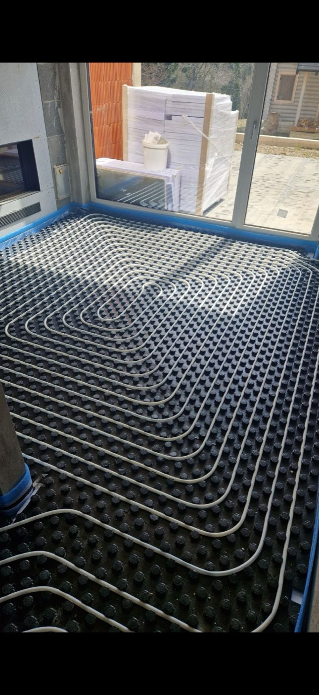
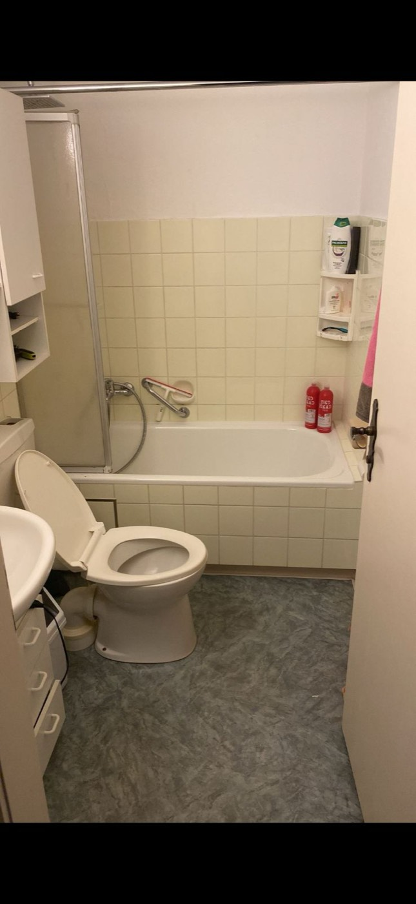
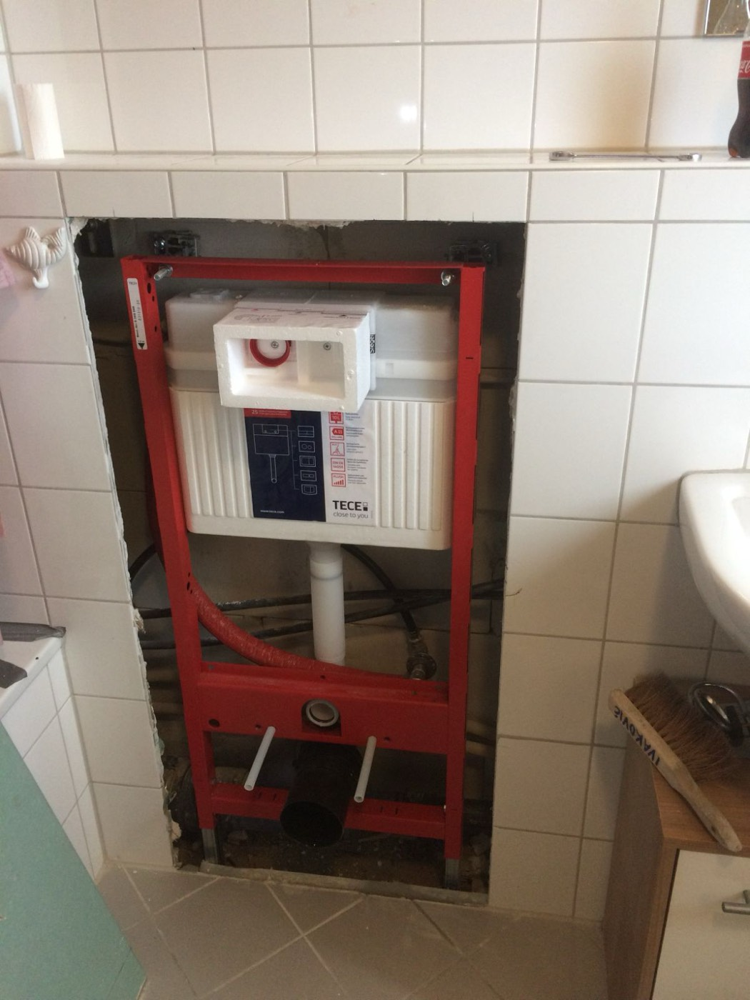

Grijanje
Centralno i podno grijanje, zamjena i ugradnja radijatora, kotlovnice, dizalice topline, peći na pelete i drva.
01PIPE PLAN d.o.o. je zagrebačka firma za sve vrste instalacija grijanja, vode i plina – od popravaka i hitnih intervencija do adaptacija kupaonica i novogradnje.

Referenca · podno grijanje na čepastim pločamaPopravci, adaptacije, novogradnja i hitne intervencije – za stan, kuću ili poslovni prostor.
Centralno i podno grijanje, zamjena i ugradnja radijatora, kotlovnice, dizalice topline, peći na pelete i drva.
01Vodovodne instalacije, kanalizacija, pomicanje dovoda i odvoda, sanitarije, tuš kabine, ugradbeni vodokotlići i bojleri.
02Plinske instalacije i razvodi, prilagodba postojećih instalacija – skraćivanje i uklanjanje plinskih cijevi.
03Manji vodovodni radovi i kvarovi, adaptacije kupaonica i stanova, knauferski i soboslikarski radovi.
04Stara kupaonica s kadom i pločicama iz drugog vremena zamijenjena je novom: zidni WC s ugradbenim vodokotlićem, umivaonik s ormarićem i tuš. Povucite klizač i usporedite.
Fotografije: referenca „Adaptacija kupaone”, eMajstor profil tvrtke.



PIPE PLAN d.o.o. osnovan je u ožujku 2025. u Zagrebu. Registrirana djelatnost tvrtke je uvođenje instalacija vodovoda, kanalizacije i plina te instalacija za grijanje i klimatizaciju. Tvrtku vodi direktor Goran Lovrić.
Osim samih instalacija, radimo i ono što ide uz njih – rušenje, knauf, glazuru i završne radove – pa adaptacija kupaonice ili stana može ići kroz jednu firmu.
Ocjene s eMajstora, gdje tvrtka ima 25 ocjena klijenata. Izdvojeno je nekoliko komentara.
„Za svaku pohvalu – od inicijalnog kontakta i dogovora, savjetovanja pa tako i samog izvođenja radova. Uredno, efikasno, precizno! Svaka čast i puno hvala!”
„Jednostavan dogovor, poštivanje rokova, ljubazni u komunikaciji, dobro izveli, počistili. Sve pohvale.”
„Brzi, stručni, ljubazni. Svakako za preporučiti.”
„Kvaliteta, brzina, cijena, vrlo ugodna komunikacija.”
Izvor: eMajstor – PIPE PLAN d.o.o.
Niste našli odgovor? Nazovite 095 356 7140.
Instalacije grijanja, vode i plina: centralno i podno grijanje, kotlovnice, dizalice topline, peći na pelete i drva, vodovod i kanalizaciju, plinske instalacije, sanitarije, ugradbene vodokotliće i bojlere. Uz to radimo popravke, adaptacije kupaonica i stanova te novogradnju, a po potrebi i knauferske i soboslikarske radove.
Da. Uz veće radove preuzimamo i manje vodovodne radove i popravke: zamjenu slavine, bojlera, priključak perilice rublja, zamjenu radijatora ili vodokotlića.
Sjedište tvrtke je u Zagrebu (Čepinski put 12), a radimo u Zagrebu i okolici.
Hitne intervencije su među našim uslugama. Za kvar ili curenje najbrže je nazvati 095 356 7140.
Nazovite 095 356 7140 ili pošaljite upit preko obrasca na ovoj stranici: navedite vrstu radova, kvart i kratak opis, a ako možete, priložite i fotografiju u e-mailu.
Područje rada: Zagreb i okolica.